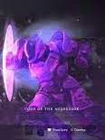

The Titan class is a very popular class due to the fact that titans are the damage class. The Titan subclass is used by people who like rushing into battle, taking on a lot of enemies, and dealing lots of damage. They are crucial for a team that is going to take on a tough boss or raid. Like the other classes, you can choose one of three subclasses, Arc, Solar, and Void.
As I said before, there are many different armours due to the fact that one piece of armour cannot be used for multiple classes, only the class it says it is for. For example, if you have a Titan chestplate, only your Titan character will be able to equip it. thankfully it is not this way with the weapons. There are four pieces of armour, helmet, chestplate, gauntlets, and greaves. To see a list of helpful Titan armours, click here.
A Titan's normal melee attack is a punch. The Titan's form of protection is a barricade. You can choose one of two barricades.
Towering Barricade - provides full shelter from oncoming enemy fire form the front, but you cannot shoot through the shield becuase your shots deal damage to the barricade.
Rally Barricade - is shorter than the towering barricade and will only protect you if you are crouching, but there is a space in the middle to shoot at your enemies from.
You can also choose one of two melee abilities. The first and probably most popular is the Titan Bash. 